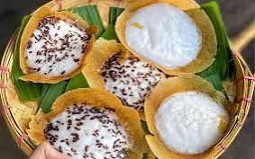
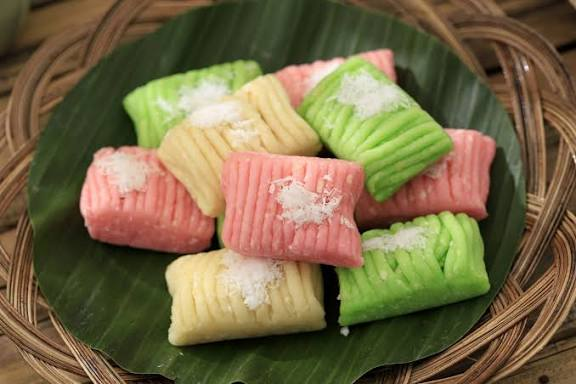
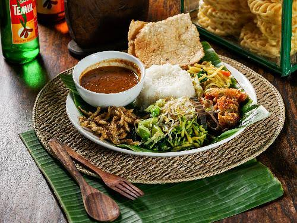
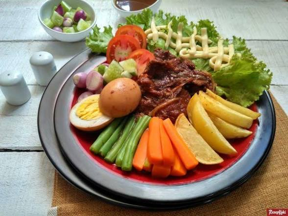

Makanan kuliner khas solo

Serabi Solo – jajanan legendaris khas Surakarta.

Timlo Solo – sup ayam bening khas Solo.

Getuk Lindri – jajanan tradisional dari singkong.

Nasi Pecel – nasi dengan sayur dan bumbu kacang.
Sate buntel – daging cincang yang dibumbui, dililit lemak jala, lalu dibakar

Timlo – Kuah kaldu yang gurih, nasi yang lembut, sayuran yang segar, dan daging yang empuk.

Selat Solo– perpaduan unik manis, gurih, dan sedikit asam dengan aroma rempah yang kaya.